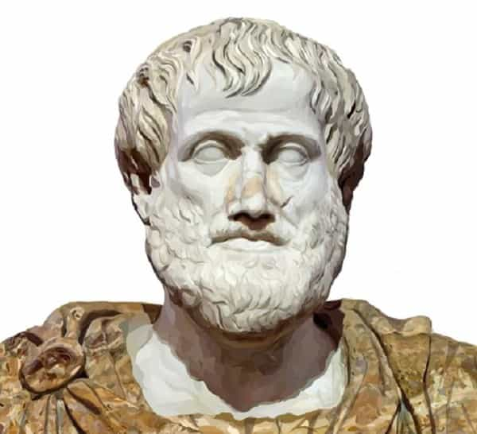

André is a young European who left his decaying country in 2012 for greener pastures. He enjoys exploring subterranean places, reading about a host of interconnected topics, and yearns for Tradition.


Some weeks ago, a ROK piece pointed out that social laxity encouraged misbehaving and extreme individualism. It linked to intelligent articles from a psychologist, Theodore Dalrymple, who showed how the commitment not to judge the others amounted to a refusal to learn from experience and had caused criminal cases of neglect.
Indeed, the turning of a blind eye to crime and criminal character have allowed criminals to kill and rape freely—from the case of a two-year-old children killed by his dark triad father Dalrymple mentions to what happened in Rotherham. These cases could have been easily prevented if only authorities were allowed to do their job and if common sense could prevail without constant leftist interference.
Yet, and although the lack of judgment is a real problem, it is only a side of the wider trend. Leftists do judge a lot. They had no problem slipping from the purported nonjudgmental hippie attitude of the 60s to a harshly coercive behavior.
“Don’t be racist!”
“Don’t be right-wing!”
“Follow the fashion!”
“You’re privileged! Accept everything the professional ‘minority’ groups will throw at you and shut up!”
Behind the hysteria that reeks on “f***ing white males!” is a very judgmental will to enforce a hostile notion of “social justice.” SJWs are willing to judge and shame people. They only feel bad—not remorseful—when they see their tactics fail. The very ones who protest fat shaming have no problem expressing grim judgments against those they label “fascists” or anything like that.
Here I would like to clear a bit of the general mess the nonjudgmental commitment has contributed to create through a kind of philosophical approach.
Philosophy, or at least one manner to do it, consists in formalizing and abstracting general issues. Particular cases always imply a variety of factors and make it easy to remain trapped inside an all too subjective point of view. When a question is considered abstractly and through concepts, and when particular cases are used as examples instead of being at the center, it becomes much easier to ask it seriously and consider possible answers.
In the case of judgment, I would say the questions are:
The last question is the most composed of all and consequently comes after them in the logical order. It also seems the most common-sensical as it is closer to practice: if I judge that expired food ought not to be consumed, judgment is obviously useful as to protect me from health-threatening consequences.
On the other hand, it could be argued that if I go beyond the judgment, without rejecting it altogether, I could consume expired food in order to experiment its effects, so to see if they are really deleterious, mildly uncomfortable or absolutely negligible.
When expanded to the social sphere, judgment can have a conservative or a “progressive” function, no matter the exact nature of what is to conserve or promote. Edmund Burke urged the philosophers to be respectful of popular wisdom, even if they failed to grasp its reasonableness or its legitimacy in judging. (((Jonah Goldberg))) was hiding behind a Burkean mask when he argued that “character-forming institutions [should] softly coerce (persuade) kids—and remind adults—to revere our open, free, and tolerant culture over others.”
Of course, the same “judgmentalism” one can find in popular wisdom can also be used by social engineers or interest groups to tweak what is usually considered common sense, and what Goldberg upholds as a worthy cultural identity seems more like the absence of actual identity. In all cases shame can be understood as a tool with a particular social use.
Embroiled with the aforementioned issues is a related one: accountability. Can one be at least nominally held responsible for one’s actions or condition, and if so, should one be? Depending on the answer to this question comes the ability to shame or not.
Leftists make a spurious distinction between being a land whale and getting shamed for being a self-wasted blob. They also confuse their own categories with external reality as to engrave the former into the latter: when a libtard says “we have a right to make you feel like you’re a racist if you’re behaving like a racist”, this means “let us lock you down in our anti-white, anthropology-mutilating, reality-denying narrative, and submit to our categories and judgment, you worthless freethinker.”
If you accept the implicit affirmations and shaming behind their use of the r-word as legitimate, you open the way to be judged and shamed according to their narrative and value-judgments—no matter their actual truthfulness or utility. In contrast, if you answer something like “no, whites have a right to exist and you are responsible for shaming self-defence and self-preservation, you manipulative liberal”, you contest the validity of their judgment criterion.
“This is perfectly normal, and Muslim bombings are OK, but the far-right is intolerable!”
All this seems pretty straightforward as long as we consider concepts, sentences and simplistic situations. Philosophy allows to gain mastery over fundamental ideas and questions. Doing some allows one to become aware of his own implicit and not-that-obvious beliefs. Anyone who wishes to be decently knowledgeable about life-relevant issues should, I think, better read Aristotle’s Ethics than feed exclusively on personal improvement websites. Still, when you start applying philosophy to the real world, you can see how messy and chaotic it is—and here common sense does quickly what philosophy could tediously half-do.
The red pill per se entails an almost philosophical interrogation when one starts to notice how the “normal” is not normal at all and why it is so. As Plato and later Aristotle would say, philosophy begins with astonishment, when the seemingly normal or common world we live in shows us a strange inconsistency. Before we gathered on the Internet, many of us had red-pilling experiences. Our consciousness drifted from the narrative and we started to see through the taboos, untold rules and all the stuff that structures the narrative—and that normies want to keep taking for granted.
Perhaps the greatest power of all is the ability to impose one’s narrative upon the minds of others. Without coercion, without violence, one epistemologically dominates others through the values and “facts” that they takes for granted. The greatest power is to determine what is “normal.” Cultural struggle is thus one of the highest political struggles. (Source)
We contend with liberals to uphold different versions of normalcy. We know it is not normal in the absolute, non-relative or transient sense, that trannies are celebrated, that criminals are constantly excused, that irresponsible sluts are constantly saved from the consequences of their own behavior, that death threats are celebrated if made by “minority” individuals against whites. The Current Year “normalcy” is a hopeless nightmare, an endless stream of unfairness and ugliness that drowns any trust left and is downright killing whites.
Julius Evola’s Riding the Tiger, making a similar diagnosis during the Freudo-Marxist onslaught of the 60s, advised his readers to withdraw towards their inner citadel. It is good to do so indeed, as long as the withdrawal is temporary and used to gain a critical edge—not when it becomes synonymous with backing down or autism. Just as philosophy existed on public forums before it was taken away by ivory tower academics, a fair, balanced consciousness should be a basis for recasting the mess rather than ignoring it.
The left worked hard to inject “racism” or “xenophobia” into the usual discourse and thinking. It did everything it could to steer people by barring normal ways of thinking. Likewise, we have to turn the mess on itself by deconstructing leftist categories of thought, exposing them or laughing them out, by trolling libtards and everything else.
Even then, what we are doing may seem messy from the analytical point of view of philosophy as well. The Alt-sphere has no rigid system of thought. We act rather through a sense of things and a willingness to make the normal normal again than from exceedingly formal principles. Thus it is hard to suggest ready-made answers to the aforementioned questions: these are more of a support of reflection than an absolute basis, and the answers may seem different from person to person. Diversity of ideas in the Alt-sphere may be our strength as long as internal disagreements remain on the sideways.
Are we more or less judgmental than leftists? The question, which may seem relevant when we criticize their purported commitment not to judge, is actually misplaced. For just as the left judges X more harshly than Y, or abstains altogether from judging Y or having a prejudice against Y, we do the same, albeit with different Xs and Ys.
I think I can rightly say that we want a healthy ability to judge fatties, social parasites of various kinds, welfare abusers, family-destroyers, criminals in general… just as we find unjustified the smearing of wealthy people qua wealthy, or against entrepreneurs, or against masculinity.
When white boomers laugh along with a (((Democrat))) because they find that their peers killing themselves is funny, they judge so to be normal and a laughing matter. We rightly find it scandalous and wish for more solidarity and respect. Everyone judges, all the time. Everyone has to—even considering the most trivial matters such as what possible path is better to go back home after work.

As for today, it could be said that red-pilled people must gain the upper hand over shrieking society-destroyers and over the blue-pilled mass in general. In the longer term, traditional distinctions and roles will have to reassert themselves.
Not because of wanting for “supremacy”, as Leftist power cultists want to believe, but because this makes for an equilibrated, stable, healthy, goodness-rewarding world, and because, goddamit! our civilization was basically ours before (((little grey men))) started tearing it apart by turning social categories into hostile groups.
Those who took over had no particular right to do so: they only acted in a “might is right” fashion, albeit more subtly than through the open use of force. Manipulating norms and common sense is no more legitimate per se than hitting your neighbour because you judge his clothes ugly.
Short-term, a good judgment follows the red-pilled awareness, no matter who does it. Long-term, finer and more orderly distinctions will reassert themselves. Just be careful that neomasculinity does not get hijacked, for example, by thugs taking over in the name of their own notion of virility.
Knowing how to judge, when to express one’s judgment, how, what not to judge and to adapt one’s judgment to the particular circumstances one dwell in is a true virtue. It is an ability one hones day after day, occasion after occasion, for years—even decades.
One can be too harsh by, say, over-criticizing or overemphasizing petty details, just as one can be too complacent by ignoring important issues or by complaining about said issues while remaining lukewarm about their causes. I remember a baby-boomer who could ignore bullies—among children he was supposed to care about—but would make fusses about uncleaned breadcrumbs over the common table.
This kind of blatant misjudgment is painful to the child who senses how misplaced, unfair, and hypocritical it is. Fortunately, we are no more children and I know many millennials whose judgment seems much better to me than boomers’.
Aristotle was right about the Golden Mean, the Stoics were right about holding oneself to high standards, those who bestowed unconditional “rights” on whatever crafty crybully were wrong and most if not all the mainstream idols from last century were wrong. Does that sound judgmental? It is. Yet it is no more judgmental than your average SJW’s hamstering, and in contrast with that, it is (on the) right.
Read Next: It’s In Our Nature To Judge Others